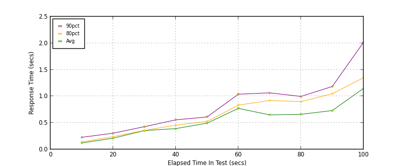
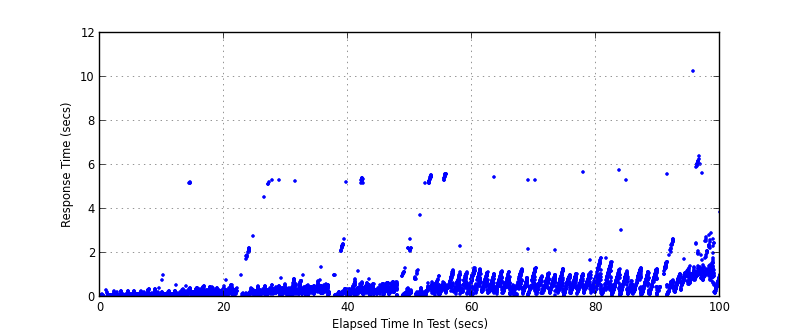
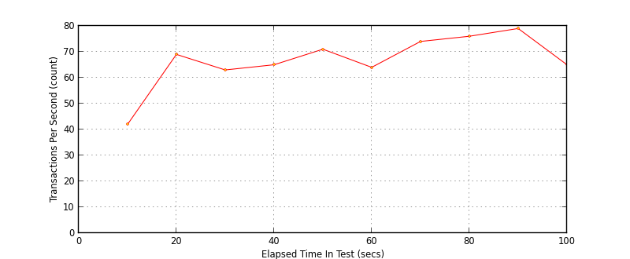

Performance Results Report
Summary
transactions: 6841
errors: 1
run time: 100 secs
rampup: 100 secs
test start: 2013-05-03 13:43:51
test finish: 2013-05-03 13:45:30
time-series interval: 10 secs
workload configuration:
| group name | threads | script name |
|---|
| user_group-1 | 100 | createCustomer.py |
All Transactions
Transaction Response Summary (secs)
| count | min | avg | 80pct | 90pct | 95pct | max | stdev |
|---|
| 6841 | 0.057 | 0.573 | 0.853 | 1.052 | 1.271 | 10.253 | 0.703 |
Interval Details (secs)
| interval | count | rate | min | avg | 80pct | 90pct | 95pct | max | stdev |
|---|
| 1 | 420 | 42.00 | 0.057 | 0.121 | 0.141 | 0.228 | 0.271 | 0.766 | 0.071 |
| 2 | 696 | 69.60 | 0.060 | 0.211 | 0.240 | 0.305 | 0.385 | 5.222 | 0.391 |
| 3 | 638 | 63.80 | 0.058 | 0.354 | 0.359 | 0.428 | 0.551 | 5.326 | 0.561 |
| 4 | 659 | 65.90 | 0.058 | 0.391 | 0.456 | 0.556 | 0.740 | 5.264 | 0.451 |
| 5 | 714 | 71.40 | 0.065 | 0.494 | 0.527 | 0.611 | 1.044 | 5.406 | 0.767 |
| 6 | 647 | 64.70 | 0.064 | 0.773 | 0.833 | 1.039 | 5.260 | 5.606 | 1.201 |
| 7 | 745 | 74.50 | 0.092 | 0.650 | 0.921 | 1.065 | 1.152 | 5.441 | 0.391 |
| 8 | 769 | 76.90 | 0.069 | 0.661 | 0.901 | 0.997 | 1.075 | 5.692 | 0.375 |
| 9 | 795 | 79.50 | 0.092 | 0.731 | 1.048 | 1.185 | 1.311 | 5.781 | 0.450 |
| 10 | 658 | 65.80 | 0.106 | 1.150 | 1.350 | 2.018 | 2.546 | 10.253 | 0.991 |
Graphs
Response Time: 10 sec time-series

Response Time: raw data (all points)

Throughput: 5 sec time-series
